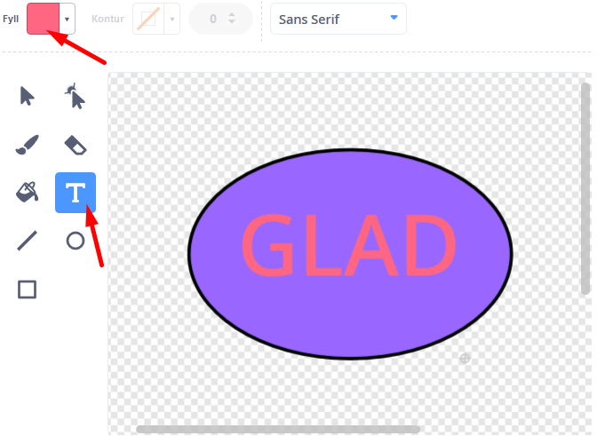
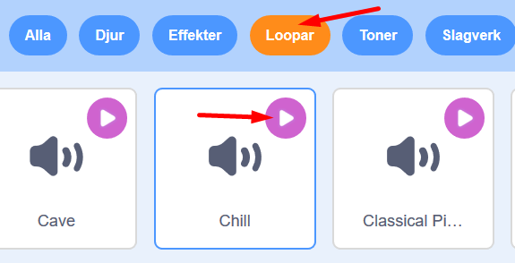

Här får du skapa din egen robot som hjälper dig i din vardag! Vad vill du att din robot ska hjälpa dig med? En Musikrobot som spelar glad musik när du är ledsen? Eller en Matrobot som hjälper dig välja vad du ska äta till middag? I den här uppgiften får du prova på att koda meddelanden och variabler i Scratch.
Klicka på bilden nedanför för att testa ett exempelprojekt med en hjälpsam Känslorobot:
Bläddra dig fram genom denna guide, steg för steg. Öppna även verktyget Scratch på sajten www.scratch.mit.edu där du kodar och skapar själva Min Robot-projektet utifrån Kodbokens instruktioner.
Du bestämmer själv hur just din robot ska se ut, vad den ska hjälpa till med och hur. Kanske det är en Matrobot som hjälper dig att välja vad du ska äta till middag? Eller en Musikrobot som spelar glad musik när du har tråkigt?
Då börjar vi koda!
Här ska du välja en ny bakgrund och rita din robotfigur. Gör såhär:
Logga in på Scratch och öppna ett nytt projekt genom att trycka på Skapa på Scratch startsida.
Nu ska du välja en ny bakgrundsbild. I nedre högra hörnet finns en blå ikonne för Välj en bakgrund. Klicka på den så kommer du till Scratch bakgrunds-bibliotek. Klicka på en bakgrundsbild du gillar så läggs den till i ditt projekt.

Ta bort Katt-sprajten i projektet genom att klicka på soptunnan på den lilla kattbilden under scenen. Då försvinner katten ur projektet.

Dax att välja en figur som ska vara din robot. I vårt exempelprojekt har vi valt sprajten Retro Robot, men du väljer vilken figur du vill som din robot.
Klicka på knappen Välj ny sprajt. Det är den lilla blå symbolen med en vit katt på, som du finner i nedre högra hörnet i Scratch. Klicka på sprajt du vill ha i sprajtbibioteket som kommer fram, så läggs den till i ditt projekt.

Om du istället vill rita din egen robot kan du välja ritverktyget genom klcika på penseln Måla ny sprajt som kommer fram om du håller muspekaren över knappen Välj ny sprajt:

När du är nöjd med din ritade sprajt så klickar du på fliken Kod högst upp i vänstra hörnet, så kommer du tillbaka ut ur ritverktyget.

Om din robotfigur är för stor kan du ändra storleken. Klicka på siffrorna vid Storlek som finns under scenen och skriv in nytt lägre tal. Storleken visas i procent, där 100 är full storlek. Prova dig fram tills du är nöjd.

Nu har du din robot-sprajt och en bakgrund. Nu ska vi börja koda det som roboten ska hjälpa till med. att lägga till vad roboten ska hjälpa dig med.
Nu ska du få din robot att fråga vad du behöver hjälp med. Det kan vara att exempelvis hjälpa dig att välja maträtt eller pigga upp dig om du känner dig ledsen. Gör såhär:
Se först till att robot-sprajten är vald, genom att klicka på den lilla robot-figuren under scenen så den blir blåmarkerad. Nu kan du börja koda din robot.
Från tema HÄNDELSER drar du in kodblocket När GRÖN FLAGGA klickas på och lägger det på skriptytan för din robot. Det här är koden för starktknappen på ditt projekt.

Fån tema UTSEENDE drar du in kodblocket säg hej i 2 sekunder Lägg det direkt under När GRÖN FLAGGA klickas på.

Dra sedan in ett till likadant kodblock med säg Hej i 2 sekunder från tema UTSEENDE och lägg det under de andra kodblocken.
Vi vill att roboten ska kunna hjälpa oss med något. Ändra därför texten Hej i det nya kodblocket till en fråga som du vill att roboten ska ställa dig, så den vet hur den bäst kan hjälpa dig. I vårt exempel med vår Känslorobot har vi valt frågan Hur mår du?.
Tips! Är det svårt att komma på en bra fråga till din robot? Välj en fråga som passar för vad just din robot ska hjälpa dig med. Om det är en Matväljar-robot kanske den frågar: Vad är du sugen på att äta? Om det är en Tröstar-robot, kanske den frågar Hur mår du?.

Testa ditt projekt! Klicka på START-flaggan. Frågar roboten din fråga?
Nu har vi en robot som ställer frågor. Men hur ska den veta ditt svar? Vi måste koda vidare.
För att din robot ska kunna hjälpa dig måste den veta vad du svarar på frågan. Därför ska vi nu lägga till två olika svar att välja mellan. För att lösa det skapar vi två nya sprajtar som blir till svar-knappar att klicka på. Du ska göra en knapp i taget, så att det till slut blir till två olika sprajtar med varsin knapp. Gör såhär:
Håll muspekaren över Skapa ny sprajt och välj penseln för Måla. Nu kommer ritverktyget för sprajtar fram.
Du ser även att det bildas en ny liten sprajt-ruta under scenen, bredvid din robot. Det blir din nya knapp-sprajt.
Rita nu den första knappen. Det kan vara exempelvis en enkel rund eller fyrkantig form fylld med färg. Välj först en färg du vill ha på knappen. Välj sen ett ritverktyg, exempelvis rund form, och måla en knapp på ritytan.

Byt till en ny färg som du vill skriva texten med svaret på din knapp. Välj en färg som syns tydligt på knappen. Välj sen verktyg att skriva text med, det är knappen med ett T. Skriv ett ord med ett av svaren på din knapp.

Tips! Blir knappens text för liten eller på fel ställe? Du kan ändra storlek på texten och vart den ska placeras genom att klicka en gång utanför ritverktygets yta, direkt efter att du skrivit texten. Då kommer en liten ram upp kring texten, som du kan dra i hörnpunkterna för att förstora eller förminska texten och ta tag i mitten av för att flytta till rätt position på knappen. utanför
Nu ska du göra en till knapp med den andra svars-texten på. Gör på samma sätt som ovan. Börja med att klicka på Måla som finns under knappen för Skapa ny sprajt.
Rita nu en andra knapp och skriv den andra svarstexten på den. Följ instruktionen ovan och gör din knapp på samma sätt som din första.
Såhär ser vårt exempel ut med vår Känslorobot. Du bestämmer själv vilka svar din robot ska få och hur knapparna ska se ut.

Nu har du att ha en robot och två olika svarsknappar bredvid. Men hur ska roboten få reda på vilket svar vi väljer att klicka på? Och hur ska knapparna kopplas så de börjar fungera? Dax att koda vidare, så roboten kan få instruktioner om våra svar och kan hjälpa oss!
Nu ska vi lägga till kod för att koppla svarsknapparna till roboten, så att roboten kan veta vilket svar du ger - alltså vilken knapp du klickar på. För att göra detta ska vi låta de olika srajtarna skicka små meddelanden till varandra, som får olika saker att hönda i rätt ordning. Då börjar vi!
Se först till att du är tillbaka på rätt ställe där du kan koda och inte är kvar i ritverktyget. Klicka på fliken Kod hägst upp i vänstra hörnet.
Klicka även på lilla ikonen av din robot som finns under scenen, så att rätt sprajt är vald och du kan koda din robot och inte svarsknapparnas sprajtar.
Nu ska vi skapa ett första meddelande, som ska skickas från roboten till svarsknapparna. Under tema HÄNDELSER väljer du kodblocket Skicka meddelande1. Dra in det på skriptytan och lägg det direkt under den kod som finns för roboten redan. Då ser det ut såhär:
Klicka sedan på lilla pilen i det nya kodblocket så kommer en meny upp in under. Välj Nytt meddelande.

Skriv nu ett enkelt namn på ditt meddelande som beskrivet kort vad den gör. I vårt exempel döper vi det till *Skicka känslor".
När du tryck på OK ändras texten i kodblocket och ditt nya meddelandes namn står nu där.

Nu har vi skapat ett första meddelande och lagt in det i robotens kod. Men om vi trycker på gröna flaggan ovanför scenen så händer ingenting med meddelandet. Det är för att vi inte lagt in vart meddelandet ska gå och vad som då ska hända. Dax att koda vidare!
Nu ska vi koda vidare så att robotens meddelande kan tas emot av sprajtarna som är de två svarsknapparna.
Klicka på en av dina sprajtar för svarsknapparna, som finns direkt under scenen. Då får du fram den tomma skriptytan för en av knapparna. Den är tom då du inte lagt till någon kod där ännu.
När vi startar vårt projekt med den lilla gröna flaggan vill vi att svarsknapparna ska vara gömda och inte synas. De ska komma fram först när roboten har ställt sin fråga. Från tema HÄNDELSER dra du ut kodblocket när GRÖN FLAGGA klickas på. Lägg det på den tomma skriptytan för din svarsknapp.
Under tema UTSEENDE väljer du lilla kodblocket göm. Lägg det direkt under när GRÖN FLAGGA klickas på.

Nu ska vi lägga in att knapp-sprajten ska ta emot robotens meddelande. Under tema HÄNDELSER väljer du kodblocket När jag tar emot "Visa känslor". Dra in den på skriptytan och lägg den bredvid de andra kodblocken, fritt på skriptytan.
När knapp-sprajten tagit emot meddelandet ska den visa sig. Under tema UTSEENDE väljer du lilla kodblocket visa. Lägg det direkt under kodblocket för meddelandet på skriptytan.
Testa koden! Tryck på den gröna flaggan ovanför scenen och testa koden. Är din svarsknapp gömd när du startar projektet och kommer det fram efter att roboten ställt sina frågor?
Testa koden! Gömmer sig båda knapparna när projektet börjar och kommer båda knapaprna med svaren fram efter att roboten ställt sin fråga?
När man klickar på en svarsknappar ska den skicka ett meddelande tillbaka till roboten, så att roboten vet vilket svar vi valt. Gör såhär:
Under tema HÄNDELSER väljer du kodblocket när denna sprajt klickas på. Dra in den på skriptytan för en av dina svarsknappar och lägg den fritt på ytan bredvid den andra koden som redan ligger där.
När vi valt vårt svar och klickat på knappen vill vi att knappen ska gömma sig igen. Lägg därför till kodblocket göm under tema UTSEENDE. Lägg det direkt under kodblocket när denna sprajt klickas på.
Knappen vi klickar på ska även skicka tillbaka ett meddelande till roboten, så att roboten får veta vilket svar som valts på. Under tema HÄNDELSER väljer du kodblocket skicka Visa känsla. Lägg det under kodblocket göm på skriptytan.
Klicka på den lilla pilen i blocket med meddelandet och välj Nytt meddelande. Döp meddelandet till något som beskriver din knapp, exempelvis Glad känsla.

Gör nu exakt samma sak igen på din andra knapp. Men glöm inte att ge din andra knapp ett eget nytt meddelande att skicka som beskriver den, exempelvis Ledsen känsla. Följ stegen ovan för att skapa samma kod på din andra knapp.
Nu har vi skapat svarsmeddelanden från våra två olika svarsknappar. Vi vill att roboten ska ge två olika reaktioner tillbaka beroende på vilket av de två svaren man klickat på. Dax att koda roboten så att den kan ta emot knapparnas olika meddelanden.
Se till att robot-sprajten är vald, så du kodar roboten och inte dina knappar.
Under tema HÄNDELSER väljer du kodblocket När jag tar emot Glad känsla. (Notera: Det kan givetvis stå något annat än just Ledsen känsla i kodblocket, beroende på vilket meddelande du senast skrivit!) Dra in kodblvoket på robotens skriptyta och lägg det fritt på ytan bredvid den andra koden.
Om du vill ändra till ett annat meddelande i kodblocket klickar du bara på lilla pilen i kodblocket och väljer vilket meddelande av dina två olika svarsknappar du vill börja med.
I vårt exempel har vi en knapp med ordet GLAD och vi vill att roboten ska fira att vi är glada. (Notera: Du väljer givetvis vad din robot ska hjälpa dig med utifrån vad det är för robot du har och vilka svar du valt att ge.) Under tema UTSEENDE väljer du kodblocket Säg Hej i 2 sekunder. Lägg kodblocket direkt under När jag tar emot Glad känsla.
Ändra texten i kodblocket så att roboten säger något till dig som svar på din valda knapp-svar. I vårt exempel firar roboten att vi ä glada och säger såhär:
Nu ska vi göra en likadan kod till som ovan, som tar hand om den andra knappens svar. I vårt exempel har vi knappar som skickar meddelandet Glad känsla och Ledsen känsla. När roboten får meddelande om att vi valt att vi är ledsna, vill vi att den ska hjälpa oss att känna oss lite gladare igen. Såhär blir vårt exempel på en till kod för Ledsen känsla:
Testa koden! Vad händer när du startar ditt projekt? Fungerar knapparna när du klickar på dem? Svarar roboten olika beroende på vilken knapp du klickar på? Notera att du måste trycka på den gröna flaggan för att starta om projektet och din robot.
Nu ska vi lägga på lite musik eller ljudeffekter till din robots olika svar.
Först ska vi lägga till kodblocken för ljud till roboten, så att den vet när den ska spela sin musik. Under tema LJUD väljer du kodblocket Starta ljud Pop. Lägg ett likadant kodblock på vardera skript med robotens hjälpande svar.

Testa koden! Kör igång ditt projekt och testa koden. Hörs det ett kort ljud efter att roboten svarat på ditt knappval? Om du hör ljudet så vet du att roboten kan skapa ljud. Om du inget hör, kolla att högtalarna på din dator är på och volymen bra.
Nu ska vi välja nytt ljud eller musik som du tycker passar din robots två olika hjälpande svar. Klicka på fliken som heter Ljud i övre vänstra hörnet i Scratch. Nu kommer du till Scratch ljudredigerare.

Nu ska vi välja två olika ljud eller musik som du tycker passar för din robots två olika svar. I vårt exempel med vår Känslorobot vill vi ha en musik som firar att vi är glada och en musik som piggar upp oss om vi känner oss ledsna. Klicka på Välj nytt ljud som är den lilla blå knappen med en vit högtalare på i nedre vänstra hörnet av Scratch.

Om du vill ha musik väljer du kategorin Loopar högst upp. Lyssna på de olika ljuden genom att klicka på de lilla små Play-knapparna. När du hittar ett ljud du vill ha klickar du mitt på ljudet, så läggs det till ditt projekt.

Gör om steg 2 och 3 och välj ditt andra ljud till ditt projekt. I vårt exempelprojekt har vi valt ljuden Dance Energetic och Dance Magic.
När du är nöjd klickar du på fliken KOD i övre vänstra hörnet av Scratch, så kommer du tillbaka till robotens skriptyta med all kod igen.
Klicka nu på den lilla pilen i dina kodblock för ljud som heter Starta ljudet Pop. Byt ljudet som ska spelas till något av de nya ljud som du valt. I vårt exempelprojekt ser koden ut såhär:
Testa koden! Spelar roboten dina nya ljud när du testar dina olika svarsknappar?
För att göra roboten mer levande kan den gärna få dansa runt och röra sig. Då kan du göra såhär:
Från tema KONTROLL drar du in ett för alltid-block, alltså en loop. Lägg den direkt under koden som spelar musik vid robotens ena känslosvar.

Inuti denna loop lägger du kodblock för rörelse. Under tema RÖRESLE drar du in blocket glid 1 sekunder till slumpmässig position.

Vi kan lägga till att roboten ska säga något mer. Under tema UTSEENDE drar du in blocket säg Hej! i 2 sekunder. Ändra texten till något som passar din robots svar, och korta eventuellt ned sekunderna till förslagsvis 1 sekund.

Upprepa nu och gör exakt samma sak igen på din robots andra svar. Byt bara ut vad roboten ska säga så det passar vad din robot vill hjälpa dig med och vitt val. I vårt exempel med vår känslorobot ser koden nu ut såhär:

För att roboten som nu kommer röra sig runt på skärmen, ska återkomma till samma startpunkt varje gång du startar om, behöver du lägga in en startposition i koden. Se först till att din robot står på det ställe där du vill den alltid ska starta, du kan dra robot-sprajten dit du vill den ska stå. Under tema RÖRELSE finns kodblocket gå till x: och y: . Dra in detta block och lägg det direkt under blocket När GRÖN FLAGGA klickas på.
Testa koden! Vad händer när du kör koden? Rör sig roboten när den svarat dig? Får du olika svar beroende på dina olika val?
Grattis, nu har du gjort klart uppgiften.
Glöm inte att spara ditt projekt! Döp det gärna till uppgiftens namn så att du enkelt kan hitta den igen.
Testa ditt projekt
Visa gärna någon det som du har gjort och låt dem testa. Tryck på DELA för att andra ska kunna hitta spelet på Scratch. Gå ut till projektsidan och låt någon annan testa spelet!
Slumpade val För att ge roboten fler svar att välja mellan kan du välja att utveckla med slumpade val och svar. Det gär att roboten känns än mer klok och hjälpsam. För att lägga in slumpade val i koden kan du göra så här: